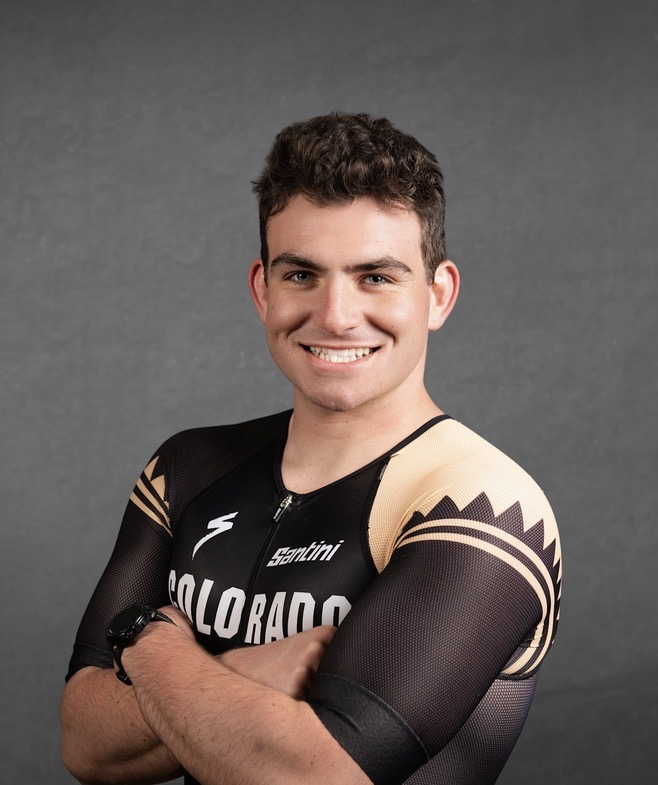

I am a junior at CU Boulder studying Creative Technology and Design with a minor in Business. I’m interested in merging design, engineering, and the outdoors,
and have worked on projects spanning graphic design, industrial design, prototyping, and fabrication. I always aim to connect my projects to the outdoors, all visible in the Projects tab.
When I’m not in class, I’m usually climbing, skiing, or taking photos of both. I train with the Colorado Triathlon Team and adventure as a member of the Big Mountain Club.
Time in nature is a big part of what drives my creativity, and I want my career to connect to it. I am currently looking for a summer 2027 internship in a design role to start building experience.
In past summers, I’ve been on staff at Camp Kawaga in Minocqua, Wisconsin, where I lead camping trips, teach outdoor skills, and work to make camp a fun, positive experience
for every camper. Camp shaped me as a camper, and now I get to help the next group of boys build the same values that shaped me: spirit, enthusiasm, sportsmanship, and fellowship. Working there has taught me how to manage a group, solve problems when plans change, and build trust quickly, and it keeps me looking for the next adventure.